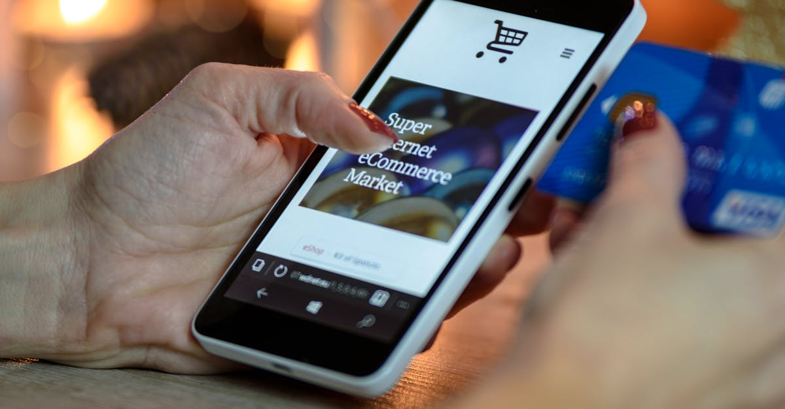

■ 说透 / SHUOTOU · 知览
SUBTITLE
购物、导购、广告先被卷进来，因为 AI 最先抢的，是你掏钱前那段犹豫

3月24日，OpenAI 把 ChatGPT 的商品发现功能往前推了一大步，商品卡片、价格、评论、购买入口全塞进来了；4月15日，Starbucks 把点单灵感塞进 ChatGPT，你跟它聊一句“今天想喝提神的，但别太甜”，它能给你配饮料，还能直接开一个订单；再往前一点，OpenAI 的广告说明页在 4 月初更新时还在写，美国 Free 和 Go 用户已经能看到 Sponsored 单元。
这三件事放一起味道就出来了。AI 产品这半年最积极靠近的钱，不在企业大单，也不在模型 API，但离普通人最近、也最容易变现的，还是购物、导购、广告、下单。
说白了，AI 先盯上的，是你掏钱前那几分钟的犹豫。
过去 70 天，ChatGPT 往卖货方向连着走了三步。
2026 年 2 月 9 日：美国 Free / Go 用户开始测试广告位。
2026 年 3 月 24 日：OpenAI 公布新版商品发现，强化比价、评论和商家导流。
2026 年 4 月 15 日：Starbucks 上线 ChatGPT Beta App，把选饮品和开订单接进对话。
这事儿其实不难理解。过去二十年，互联网卖货最贵的那一步，从来都落在“让你下决心”这件事上。支付只是最后按一下，真正烧钱的，是你之前搜关键词、翻评论、问朋友、刷测评、反复比价的那一长串动作。搜索引擎 吃的是入口，短视频 吃的是种草，电商平台 吃的是转化。现在 AI 想插进去，最顺手的地方当然也是这儿。
你想啊，一个人打开 ChatGPT，说“我想买个跑步耳机，别太闷，最好别超过 1000 块”，这句话里已经把预算、场景、偏好全说出来了。对老搜索来说，这得拆成三四轮关键词；对 AI 来说，这正好是它最擅长的活，接话、筛选、归纳、顺手再推你一把。它像一个很会聊天的导购，站在货架前帮你排除掉一堆选项。
所以 OpenAI 这波商品发现，并不只是把购物链接搬进聊天框。它干的是更前面那件事：把”我还没想明白买什么”这段最容易丢单的时间，先给截住。
— 01 —
去年很多人还把 ChatGPT 当工具，问它写邮件、改简历、做摘要。到了今年，这个关系开始变味了。你在里面说的话，已经不只是任务描述，也可能慢慢变成消费意图。你今天问“最近咖啡喝太多，有没有提神但别那么苦的”，明天看到的，也许就不再只是建议，而是一个品牌准备好的答案入口。
OpenAI 自己其实很清楚这层关系有多脆，所以广告说明页写得很小心。它反复强调，广告和自然回答分开显示，广告不会影响 ChatGPT 的答案，还把未成年人、政治、酒精、赌博、处方药、减肥、约会、金融产品这些高敏感门类先排掉。
OpenAI 在广告页里把底线写得很直白：“Ads do not influence ChatGPT’s answers.” 这句话翻成人话就是，用户对 AI 的第一笔信任账，暂时还不能拿去乱卖。
你看，这就很有意思了。传统网页广告的问题，大家都习惯了，知道上面一排是推广，下面一排是自然结果，脏归脏，边界还是清楚的。可 AI 不一样，AI 是个会跟你聊天的东西，它不像货架，更像个在耳边给你出主意的人。当一个“给建议的对象”开始带货，用户在意的就不只是推荐准不准，还会在意它到底站哪边。
这也是为什么广告会先落在 Free 和 Go 这两档人身上。免费用户多，流量大，适合先试水。Plus 和 Pro 暂时没广告，OpenAI 还给了一个“Reduced features, no ads”的免费选项，摆明了就是在测：用户愿意为了干净的建议，让多少功能。
那为啥偏偏又是 Starbucks 这种场景先冲上来呢？
因为品牌也发现了，AI 适合干一件老 App 很难干好的事：把模糊需求翻译成可买的东西。你平时进咖啡 App，面对的是菜单、糖度、冷萃、风味词，一堆按钮压过来，脑子很容易空白。可在 ChatGPT 里，你可以先像跟店员聊天一样，把状态说出来，困、热、想醒一会儿、别太腻、下午还得开会。AI 把这堆模糊话翻译成一杯具体的饮品，这一步其实就已经很接近成交了。
Starbucks 这次的 Beta App，卖的也正是这个过程。它没有把整个点单体系搬出来重做，先把“想喝什么”这道题帮你写一半。品牌想借 AI 的，不是支付能力，是它对自然语言的接球能力。
**这波 AI 卖货，真正先被卷进去的是三段关系。**
- AI 跟用户的关系，从“回答问题”往“帮你做消费决定”滑。
- 品牌跟用户的关系，从“等你打开 App”往“先在对话里截住你”滑。
- 广告跟内容的关系，从“网页边栏”往“建议下方的补充单元”滑。
— 02 —
好，到这儿你可能觉得事情已经挺明白的了，ChatGPT 既能导购，又能挂广告，下一步是不是就要把电商平台狠狠干一顿了。
但有个反向证据，咱不能假装看不见。
OpenAI 在 3 月 24 日那篇商品发现文章里，自己就把边界写出来了：早期的 Instant Checkout 不够灵活，所以新版让商家用自己的 checkout。Starbucks 这边也一样，用户可以在 ChatGPT 里开始下单，但最后还是回到 Starbucks app 或 starbucks.com 完成交易。连 Walmart 那个案例，OpenAI 说的也是把你带进一个更贴着沃尔玛账户、会员和支付体系的环境里。
这说明什么？
说明 AI 可以站上导购台，收银台暂时还在老商场手里。
你想把这笔钱真的收走，后面还有库存、履约、退款、会员、优惠券、售后、风控、积分、复购，一串又脏又重的系统工程。平台和品牌真正舍不得放的，也恰恰是这些环节。聊天机器人当然能帮你挑东西，可谁掌握支付、订单和会员，谁才真正掌握复购。AI 现在更像一个新来的金牌店员，能把人带到柜台前，但柜台钥匙没那么容易交出来。
这也是为什么我觉得，眼下别急着把这事写成什么“AI 颠覆电商”。味儿还没到那一步。它更像一次关系重排：旧平台还捏着交易闭环，新 AI 正在抢“你先听谁的”这个位置。前者控制钱路，后者控制心路，谁都不轻松。
而且，心路这东西，一旦做脏了，反噬会特别快。广告页为什么把敏感品类列那么细，逻辑很简单，用户能接受一个搜索框边上有推广，很难接受一个自己常拿来聊工作、聊学习、甚至聊私事的助手，突然顺着你的脆弱状态给你塞货。这条线只要踩歪一点，信任就会掉得很快。
所以 AI 产品现在这副“急着卖货”的样子，别只理解成商业化焦虑。更准确一点说，是它们终于发现，离钱最近的地方，不一定是技术最重的地方，往往是用户最犹豫的地方。购物、导购、广告这些环节最先被卷进去，恰恰说明模型公司开始从“我能做什么”往“我能顺手卖什么”挪了。
以前你用 ChatGPT，更像借一台机器。现在这台机器开始学着跟商家一起做生意了。它当然还没彻底变成货架，也没接管整个支付链路，但它已经站在你和货之间了，而且站得比网页更贴脸，比 App 更早一步。
说得再直白一点，AI 商业化最先长出来的，是更会劝你买东西的能力。
这事往后怎么走，就看两条线谁先绷不住。要么用户对“会给建议的 AI”继续信任，广告和导购一点点往里长；要么用户一旦觉得它开始偏心，回答里那点可信度就会先掉价。品牌和平台那边也一样，谁都想借 AI 的新入口，但谁都不想把自己的支付、会员和复购命脉交出去。
说到底，AI 现在离钱更近了，可它先摸到的，还只是你掏钱包之前那层空气。
卖货这件事，AI 先抢下来的，是你抬手付款前那几秒的犹豫。收银台还在旧世界手里，但店员已经换人了。
· · ·
ZAYEN知览
说透 · SHUOTOU · 知览